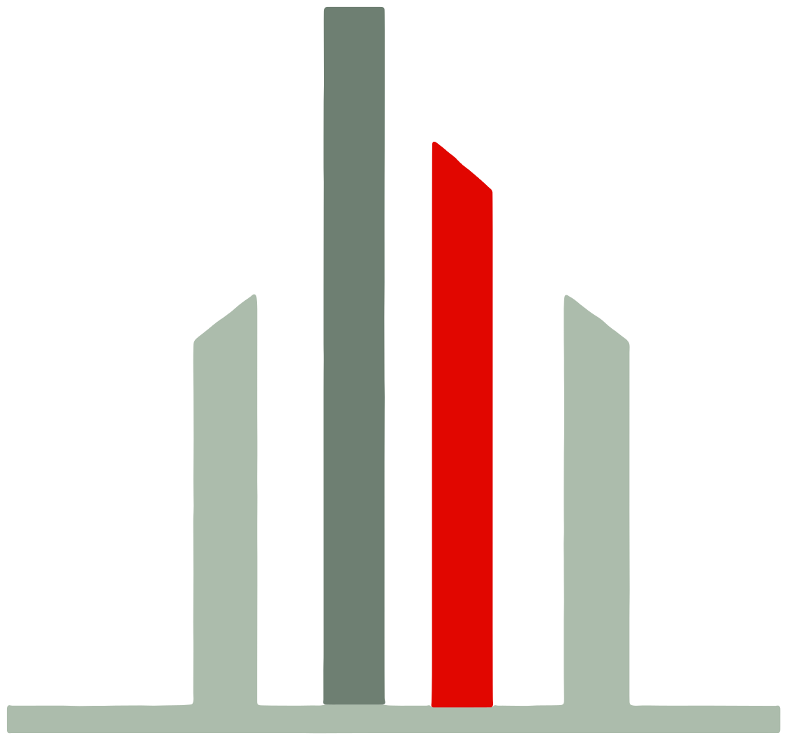
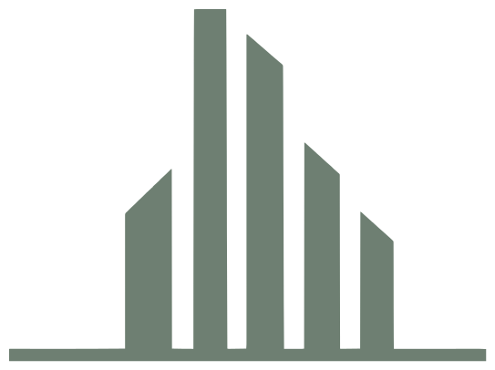

This sheet condenses the production manual into the rules suppliers and staff need day to day. The full manual and the production register sit in 08_APPROVALS.
Off-white#F9F9F7 · RGB 249 249 247 Paper and page background
Working digital values, not certified spot inks: printers convert through their ICC profile and supply a drawdown for approval. Body text uses a deep sage (#4C5D50); charcoal grey is not part of the system. Red is an accent and never a background for body text.
Montserrat Medium · straplineBUILD | MAINTAIN | IMPROVE
Inter Regular · bodyScheduled programmes that keep communal areas, external fabric and building services in good order. Numerals 0123456789 are tabular for prices, dates and references.
Inter SemiBold · labelsScope of Works · Remedial Works · Supply & Install · Job Report
All masters are outlined vectors in 01_LOGO_MASTER/svg with PNG exports in 01_LOGO_MASTER/png. They are traced from the Horizon artwork supplied in October 2026 (01_LOGO_MASTER/source); the strip lockup sets the descriptor beside the wordmark for narrow bands. The visible logo never carries "Ltd"; the legal name appears in disclosures instead.
Primary with strapline · white / off-white groundsPrimary without strapline · stationery headers, chest printsReversed on solid sage (manual-approved)

Reversed, soft descriptor · small sizes on sageSingle-ink sage · stamps, etching, one-colour printSingle-ink white · tonal garments, dark groundsStrip · lanyards, pens, van rear, narrow bands


Horizon icon and simplified icon (embroidery, under 20 mm)
Minimum sizes
Primary lockup: 35 mm wide in print, 100 mm in embroidery, 140 px on screen. Drop the strapline below 60 mm / 300 px. Icon: 8 mm print, 20 mm embroidery (simplified version). Proof every first application physically.
Unit X is the cap height of the GBS letters. Keep at least 1X clear on every side. The proportions below are those of the supplied artwork and are not to be redrawn: three bars stand to the right of the S, the horizon line runs the full width of the lockup, the red descriptor sits below the line and the strapline below that.
1X1X1X1X
Element
Construction (X = 100 units)
Letters
GBS, cap height 1X, sage (off-white when reversed)
Bars (left to right)
Tall sage 0.16 × 1.76X · red 0.155 × 1.43X · short sage 0.17 × 1.03X, all standing on the horizon line
Horizon line
0.07X thick, full lockup width, 0.04X below the letter baseline
Descriptor
PROPERTY MAINTENANCE, red, cap height 0.27X, 0.13X below the line
Strapline
BUILD | MAINTAIN | IMPROVE, sage with red separators, cap height 0.14X, 0.2X below the descriptor
Do not
Stretch or condenseRotatePlace on red or low-contrast groundsAdd shadows, gradients or effectsRecolour outside the approved setGBSSubstitute fonts or redraw the bars